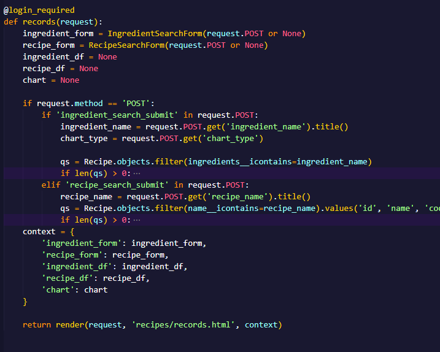

Overview
A Django web application with a database of recipes. Users can search by ingredients or recipe names, and view data about ingredient popularity.

Purpose and context
This recipe app was made for a CareerFoundry project made with Django. It is a database that contains different recipes and details like instructions, cooking time, ingredients, and difficulty level.
Objective
The goal of this project was to make a full Django application and use data visualization tools to show information about recipes.
Screenshots
Homepage
Recipe cards on all recipes page
Average recipe details page.
Login page.
Records page.
Search results for an ingredient.
Bar chart showing number of recipes containing searched ingredient over time.
Pie chart showing the percentage of recipes that the searched ingredient appears in.
Line chart showing number of recipes containing searched ingredient over time in comparison to all other unique ingredients.
Results when you search for a recipe by name.
Process
First I created a model for my recipes, and some functions like splitting ingredients into a list and calculating the recipe difficulty.
Next I created a superuser so I could add a few recipes.
After that I made HTML templates for the recipes and details, and some custom images like a banner and logo.
After styling everything, I used QuerySet and Pandas to visualize data about recipes in the database.
Deciding what type of data to show on different graphs.
Form options for a recipe or ingredient search.
Function to request records from a search query.
Function to create a chart based on the user's query and requested chart type.
Function to actually visualize the data and create a graph.
Retrospective
Successes
I really like how my data visualization section turned out. I think I made a good decision deciding which types of data to display that would give users the most useful information when they search for recipes. This project gave me a good understanding on how to create and host a Django project.
Challenges
I had a few issues with getting my static files to work at first, but once I got familiar with the project file structures it became much easier. I also had some issues at first relating to making database migrations but got the hang of it after a few errors.
Future steps
I would like to add ingredient quantities or even a separate model for saving more detailed information about ingredients, such as common uses and average price per ounce.
Thoughts
I enjoyed getting to learn Django and Python in general. Learning how to use QuerySet and Pandas was also very beneficial.
Credits
Role: Lead Developer
Mentor: James Wilson